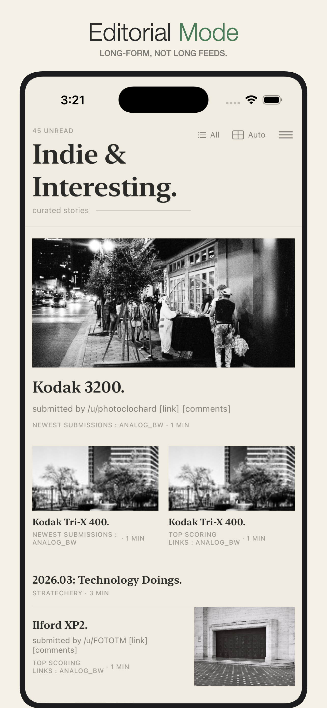
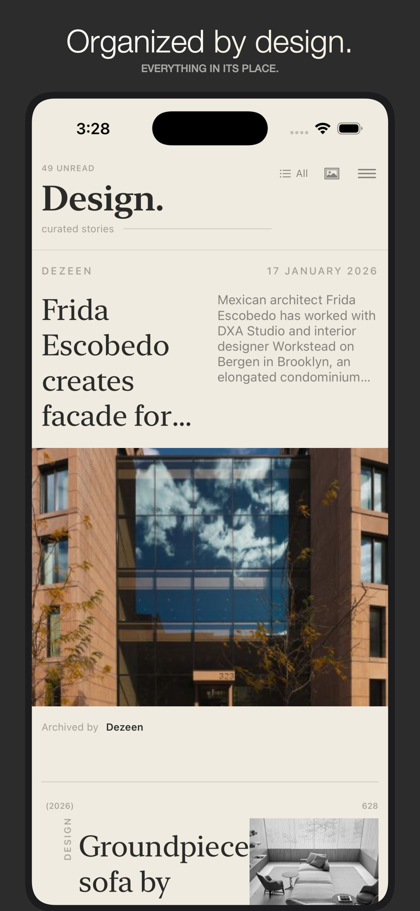
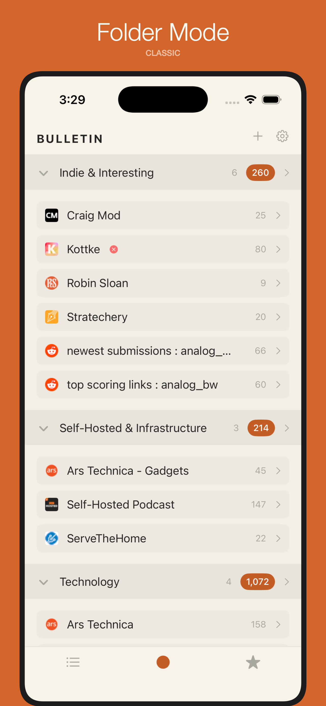
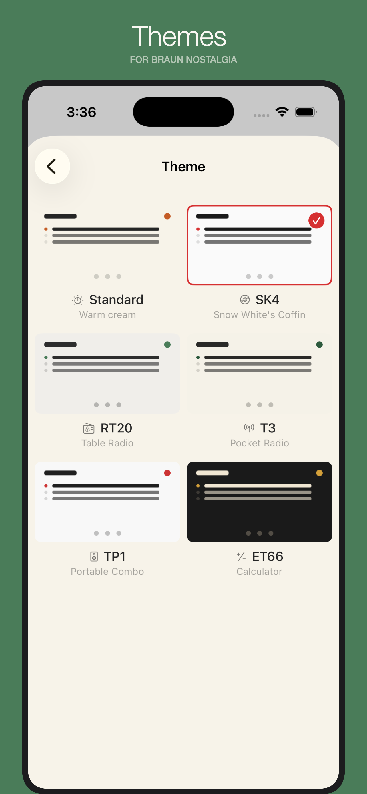
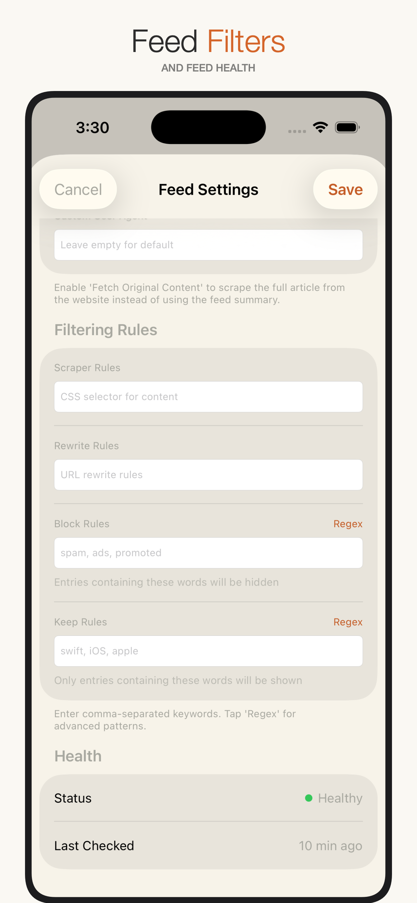
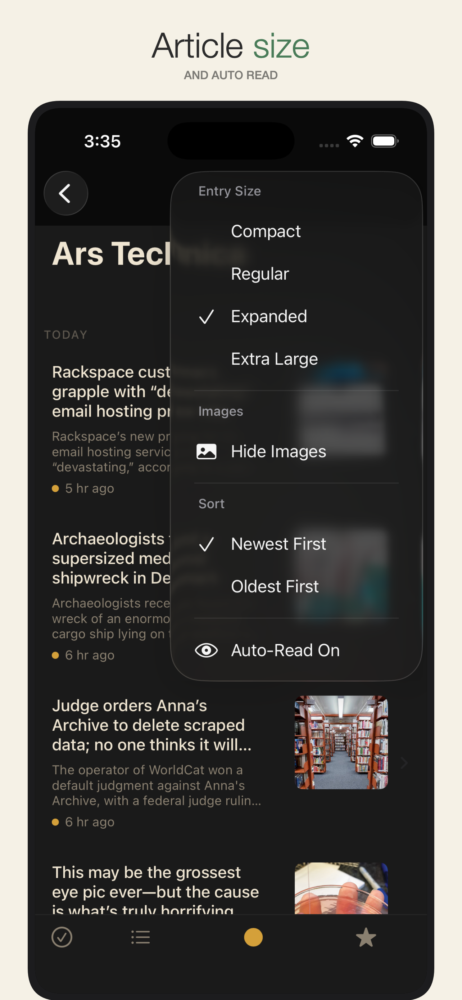
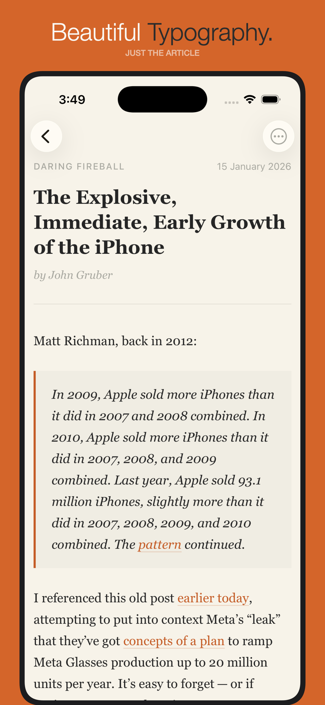

Bulletin
If you've chosen to self-host your feeds, you deserve a client that respects that decision. Bulletin is built exclusively for Miniflux — thoughtfully designed, quiet, and entirely yours.
A look inside







Bulletin is a thoughtfully designed RSS reader built exclusively for Miniflux. If you've chosen to self-host your feeds, you deserve a client that respects that decision.
Features
Two ways to read
Accordion mode for quick scanning; Editorial mode for immersive, magazine-style reading. Five layouts adapt to your content, and your place is kept when you switch.
Filter the noise
Blocklist and keeplist rules per feed — with regex for the precise cases. Rules sync to Miniflux and filter entries server-side, before they ever reach your device.
Full-content fetching
One tap pulls the complete article when a feed only offers a summary. Per-feed crawler, custom CSS scraper rules, and custom user agents for stubborn sites.
Mark-as-read on scroll
Entries mark themselves read as they leave the top of the screen — only when you're scrolling down. Per-feed toggle, with a keep-recently-read-visible option.
Feed health at a glance
Healthy, warning, failing, or stale — with error counts and last-checked times. Retry several broken feeds at once.
Designed with intention
Six Braun-inspired themes and four editorial styles. Eight font families with adjustable size, line height, and per-feed overrides.
No account required, no tracking, no analytics. All data stored locally and on your Miniflux server.